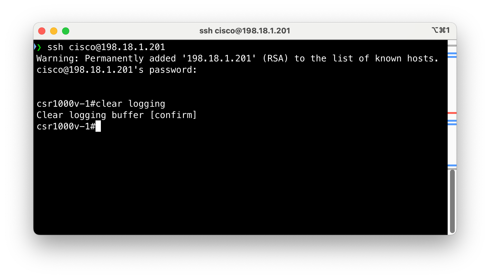
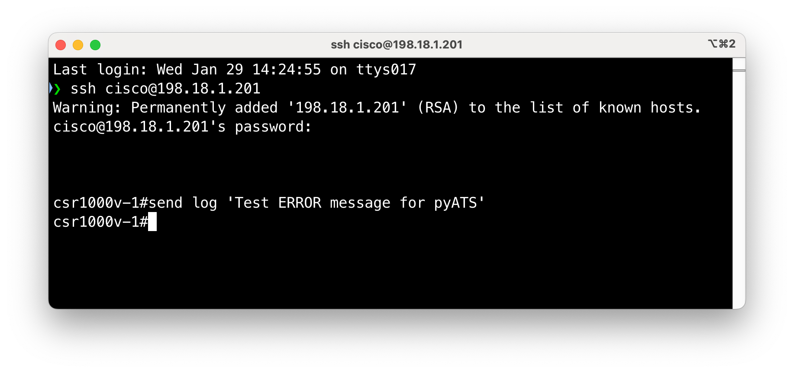

Step 2: Run tests using Robot Framework¶
Value Proposition: Robot Framework provides a versatile and structured approach to test automation that simplifies the creation and maintenance of device log verification tests. Its keyword-driven architecture allows teams to build reusable test components while maintaining clear test documentation, making it particularly effective for validating both expected operational states and fault scenarios in network environments.
The high-level logic of the test case will be as follows:
Connect to each device in the testbed.
Collect the output of
show logging | include ERROR.If the output contains more than 0 strings, it means pyATS found messages, and the test should fail for this device. Otherwise, the test should succeed.
Before creating our test case, connect to CSR. Launch PuTTY and connect to csr1000v-1 (username:
cisco, password:cisco) and enter the following commands:clear logging
Open the file task4step1.py in Nano editor:
nano ltrato_2001/task4step1.py
Identify the following classes in the file MyCommonSetup and VerifyLogging:
class MyCommonSetup(aetest.CommonSetup): # ... class VerifyLogging(aetest.Testcase): # ...
Exit Nano without saving by pressing Ctrl + X
Open the file task4step1.robot in Nano editor:
nano task4step1.robot
Pay special attention to the code Test Cases section of the file. Those two test cases are calling the Python classes MyCommonSetup and VerifyLogging defined in the file task4step1.py.
*** Test Cases *** Connect to All Devices and Setup Testbed run testcase "ltrato_2001.task4step1.MyCommonSetup" Verify Logs For All Devices run testcase "ltrato_2001.task4step1.VerifyLogging"
Exit Nano without saving by pressing Ctrl + X
Execute the robot script. The Test Cases will run for all the devices in the testbed:
pyats run robot task4step1.robot --testbed-file pyats_testbed.yaml
Check the output of the test script. The test should pass for all devices as shown below:
connect to CSR. Launch PuTTY and connect to csr1000v-1 (username:
cisco, password:cisco) and enter the following commands:send log 'Test ERROR message for pyATS'Execute the robot script again. The Test Cases will run for all the devices in the testbed:
pyats run robot task4step1.robot --testbed-file pyats_testbed.yaml
Check the output of the test script. The test should fail because the CSR device has an error log, as shown below:
{kind=link}
{kind=link}
{kind=link}
{kind=link}
Section author: Luis Rueda <lurueda@cisco.com>, Jairo Leon <jaileon@cisco.com>